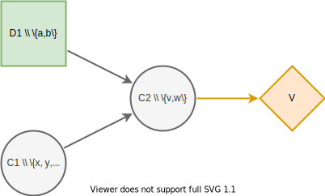

Usage
Here we show you how to construct a simple influence diagram and create a decision model using pyDecisionProgramming.
First we import pyDecisionProgramming and activate the Julia environment.
import DecisionProgramming as dp
dp.activate()
Adding Nodes
We will create the influence diagram pictures above. First we create a new influence diagram.
diagram = dp.InfluenceDiagram()
Next we define each node as a
DecisionNode, a ChanceNode or
ValueNode and add them to the diagram.
Creating a DecisionNode or a
ChanceNode requires giving it a unique
name, its information set and its states. If the
node is a root node, its information set is an
empty list ([]). The order in which the
nodes are added does not matter.
Use the add_node method to add nodes to the diagram.
D1 = dp.DecisionNode("D1", [], ["a", "b"])
diagram.add_node(D1)
C2 = dp.ChanceNode("C2", ["D1", "C1"], ["v", "w"])
diagram.add_node(C2)
C1 = dp.ChanceNode("C1", [], ["x", "y", "z"])
diagram.add_node(C1)
Value nodes only need a name and their information set. They do not have a state, since their purpose is to map their information state to utility values.
V = dp.ValueNode("V", ["C2"])
diagram.add_node(V)
Once all the nodes have been added, we generate the arcs in the diagram. This orders the nodes and numbers them such that each nodes predecessors will have a smaller number than they do. In effect, the change and decision nodes are numbered such that \(C \bigcup D = \{ 1, \dots, n\}\), where \(n=|C|+|D|\). For more details see the page on influence diagrams in the documentation for DecisionProgramming.jl.
diagram.generate_arcs()
The fields Names, I_j,
States, S, C, D
and V in the influence diagram have been
defined. The names field holds the names of
all nodes in the order of they numbers. From
this we can see that node D1 has been numbered 1,
node C1 has been numbered 2 and node C2 has been
numbered 3. The field I_j holds the
information sets of each node. Notice, that the
nodes are identified by their numbers. The field
States holds the names of the states of
each node and field S holds the number of
states each node has. Fields C,
D and V contain
the chance, decision and value nodes respectively.
In [1]: diagram.Names
Out[1]: ["D1", "C1", "C2", "V"]
In [2]: diagram.I_j
Out[2]: Vector{Int16}[[], [], [1, 2], [3]]
In [3]: diagram.States
Out[3]: [["a", "b"], ["x", "y", "z"], ["v", "w"]]
In [4]: diagram.S
Out[4]: Int16[2, 3, 2]
In [5]: diagram.C
Out[5]: Int16[2, 3]
In [6]: diagram.D
Out[6]: Int16[1]
In [7]: diagram.V
Out[7]: Int16[4]
Probability Matrices
Each change node needs a probability matrix which describes the probability distribution over its states given an information state. It holds probability values \(\mathbb P \left(X_j=s_j | X_{I(j)} = {\bf s}_{I(j)} \right)\) for all \(s_j \in S_j\) and \({\bf s}_{I(j)} \in {\bf S}_{I(j)}\).
Thus, the probability matrix of a chance node needs to have dimensions that correspond to the number of states of the nodes in its information set and number of state of the node itself.
For example, the node C1 in the influence diagram
above has an empty information set and three
states \(x\), \(y\), and \(z\).
Therefore its probability matrix needs dimensions
\((3,1)\). If the probabilities of events
\(x\), \(y\), and \(z\) occuring are
10%, 30%, and 60%, then the probability matrix
\(X_{C1}\)
should be
[0.1, 0.3, 0.6]. The order
of the probability values is determined by the
order in which the states are given when the node
is added. The states are also stored in this order
in the States vector.
In Decision Programming the probability matrix of node C1 can be added in the following way. Note, that probability matrices can only be added after the arcs have been generated.
# How C1 was added:
# C1 = dp.ChanceNode("C1", [], ["x", "y", "z"])
# diagram.add_node(C1)
X_C1 = [0.1, 0.3, 0.6]
diagram.set_probabilities("C1", X_C1)
The add_probabilities function adds the
probability matrix as a Probabilities structure
into the influence diagram’s X field.
In [8]: diagram.X
Out[8]: Probabilities[[0.1, 0.3, 0.6]]
As another example, we will add the probability matrix of node C2. It has two nodes in its information set: C1 and D1. These nodes have 3 and 2 states, respectively. Node C2 itself has 2 states. Now, the question is: should the dimensions of the probability matrix be \(\left(|S_{C1}|, |S_{D1}|, |S_{C2}|\right) = (3,2,2)\) or \(\left(|S_{D1}|, |S_{C1}|, |S_{C2}|\right) = (2,3,2)\)? The answer is that the dimensions should be in ascending order of the nodes’ numbers that they correspond to. This is also the order that the information set is in in the field \(I_j\). In this case the influence diagram looks like this:
In [9]: diagram.Names
Out[9]: ["D1", "C1", "C2", "V"]
In [10]: diagram.I_j
Out[10]: Vector{Int16}[[], [], [1, 2], [3]]
In [11]: diagram.S
Out[11]: Int16[2, 3, 2]
Therefore, the probability matrix of node C2 should have dimensions \(\left(|S_{D1}|, |S_{C1}|, |S_{C2}|\right) = (2,3,2)\). The probability matrix can be added by declaring the matrix and then filling in the probability values as shown below.
import numpy as np
X_C2 = np.zeros([2, 3, 2])
X_C2[1, 1, 1] = ...
X_C2[1, 1, 2] = ...
X_C2[1, 1, 2] = ...
⋮
diagram.add_probabilities("C2", X_C2)
In order to be able to fill in the probability
values, it is crucial to understand what the
matrix indices represent. The indices represent a
subpath in the influence diagram. The states in
the path are referred to with their numbers
instead of with their names. The states of a node
are numbered according to their positions in the
vector of states in field States. The
order of the
states of each node is seen below. From this, we
can deduce that for nodes D1, C1, C2 the subpath
(1,1,1) corresponds to subpath \((a, x, v)\)
and subpath \((1, 3, 2)\) corresponds to
subpath \((a, z, w)\). Therefore, the
probability value at
X_C2[1, 3, 2] should be the probability of
the scenario \((a, z, w)\) occuring.
In [12]: diagram.States
Out[12]: [["a", "b"], ["x", "y", "z"], ["v", "w"]]
Helper Syntax
Figuring out the dimensions of a probability matrix and adding the probability values is difficult. Therefore, we have implemented an easier syntax.
A probability matrix can be initialised with the
correct dimensions using the
diagram.construct_probability_matrix
function. It initiliases the probability matrix
with zeros.
In [11]: X_C2 = diagram.construct_probability_matrix("C2")
In [13]: X_C2
Out[13]:
[0.0 0.0 0.0; 0.0 0.0 0.0]
[0.0 0.0 0.0; 0.0 0.0 0.0]
In [14]: X_C2.size()
Out[14]: (2, 3, 2)
A matrix of type dp.ProbabilityMatrix can
be filled using the names of the states. The states
must however be given in the correct order,
according to the order of the nodes in the
information set vector \(I_j\). Notice that if
we use the colon (:) to indicate several elements
of the matrix, the probability values have to be
given in the correct order of the states in
States.
X_C2["a", "z", "w"] = 0.25
X_C2["a", "z", "v"] = 0.75
X_C2["a", "x", :] = [0.3, 0.7]
Trying with an incorrect name causes a
JuliaError to be raised.
In[15]: X_C2["z", "a", "v"] = 0.75
⋮
JuliaError: Exception 'UndefVarError: probability_matrix not defined' occurred while calling julia code:
pyDP74ca39945e["z","a","v"] = 0.75
A matrix of type dp.ProbabilityMatrix can
also be filled using the matrix indices if that is
more convenient. The following achieves the same
as what was done above.
X_C2[1, 3, 2] = 0.25
X_C2[1, 3, 1] = 0.75
X_C2[1, 1, :] = [0.3, 0.7]
Now, the probability matrix X_C2 is
partially filled.
In[16]: X_C2
Out[16]:
[0.3 0.0 0.75; 0.0 0.0 0.0]
[0.7 0.0 0.25; 0.0 0.0 0.0]
The probability matrix can be added to the
influence diagram once it has been filled with
probability values. The probability matrix of node
C2 is added exactly like before, despite
X_C2 now being a matrix of type
dp.ProbabilityMatrix.
diagram.set_probabilities("C2", X_C2)
Utility Matrices
Each value node maps its information states to utility values. In Decision Programming the utility values are passed to the influence diagram using utility matrices. Utility matrices are very similar to probability matrices of chance nodes. There are only two important differences. First, the utility matrices hold utility values instead of probabilities, meaning that they do not need to sum to one. Second, since value nodes do not have states, the cardinality of a utility matrix depends only on the number of states of the nodes in the information set.
As an example, the utility matrix of node V should have dimensions (2,1) because its information set consists of node C2, which has two states. If state \(v\) of node C2 yields a utility of -100 and state \(w\) yields utility of 400, then the utility matrix of node V can be added in the following way. Note, that utility matrices can only be added after the arcs have been generated.
Y_V = np.zeros([2])
Y_V[1] = -100
Y_V[2] = 400
diagram.set_utility("V", Y_V)
The other option is to add the utility matrix
using the
diagram.construct_utility_matrix
function. This is very similar to the
diagram.construct_probability_matrix
function. The
diagram.construct_utility_matrix
function initialises the values to infinity. Using
the diagram.construct_utility_matrix
type’s functionalities, the utility matrix of node
V could also be added like shown below. This
achieves the exact same result as we did above
with the more abstract syntax.
Y_V = diagram.construct_utility_matrix("V")
Y_V["w"] = -100
Y_V["v"] = 400
diagram.set_utility("V", Y_V)
The diagram.set_utility function adds the utility matrix into the influence diagram’s Y field.
In [17]: diagram.Y
Out[17]: Utilities[[400.0, -100.0]]
Generating the influence diagram
The final part of modeling an influence diagram using the Decision Programming package is generating the full influence diagram. This is done using the generate_diagram! function.
diagram.generate()
In this function, first, the probability and
utility matrices in fields X and
Y are sorted according to the chance and
value nodes’ indices.
Second, the path probability and path utility
types are declared and added into fields
P and U
respectively. These types define how the path
probability \(p({\bf s})\) and path utility
\(\mathbb{U}({\bf s})\)
are defined in the model. By default, the function
will set them to default path probability and
default path utility. See the
the page on influence diagrams in the
documentation for DecisionProgramming.jl
for more information on default path probability
and utility.
Analyzing the Graph
Once the diagram is fully constructed, we can find the optimal path and the utility distribution for that strategy. In the background we use the JuMP Julia package and the Gurobi optimizer. First, we must define a JuMP model.
For this section you must have the Gurobi optimizer installed. If you are an academic, check the Gurobi academic license page and follow the instructions from there.
model = dp.Model()
We then extract the objective function from the diagram and use it in the JuMP model.
z = diagram.decision_variables(model)
x_s = diagram.path_compatibility_variables(model, z)
EV = diagram.expected_value(model, x_s)
model.objective(EV, "Max")
Then we set up the Gurobi optimizer and optimize the model.
model.setup_Gurobi_optimizer(
("IntFeasTol", 1e-9),
("LazyConstraints", 1)
)
model.optimize()
We can not extract the optimal decision strategy and the utility distribution.
Z = z.decision_strategy()
S_probabilities = diagram.state_probabilities(Z)
U_distribution = diagram.utility_distribution(Z)
To print the optimal decision strategy run
S_probabilities.print_decision_strategy()
For the utility distribution when following that strategy:
U_distribution.print_distribution()
And some statistical properties of the optimal utility distribution:
U_distribution.print_statistics()